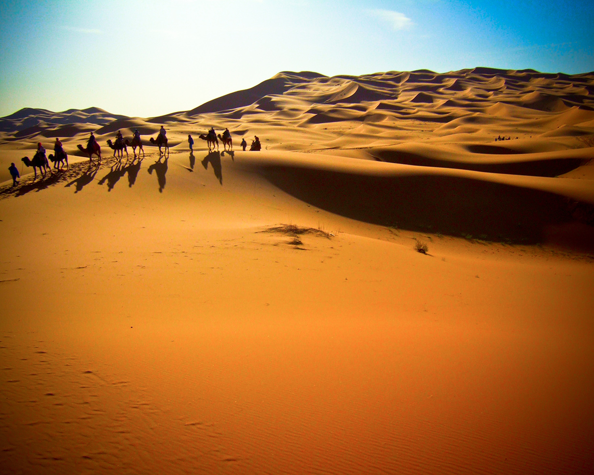
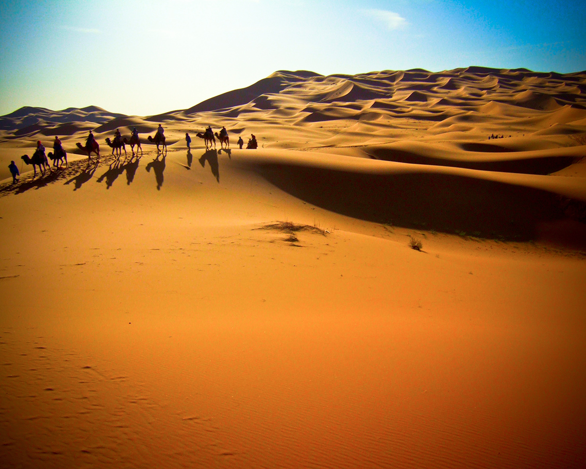

Turismo Independiente
TURISMO INDEPENDIENTE
Avenida Tenor Fleta 74, Local 2
50007 Zaragoza
Teléfono: 976-653-321
info@turismoindependiente.com
Destinos
Marrakech

Entre la tradición y la modernidad, Marrakech es la promesa de sensaciones incomparables. Paseando por la plaza Jemaa El-Fna y los zocos con sus brillantes colores y olores orientales, la ciudad roja responde a su deseo de un cambio de escenario con un chasquido de los dedos. Paseos en carruajes de caballos, terrazas soleadas, artistas ambulantes y otras actividades diurnas y nocturnas marcarán su estancia en Marruecos.
Podrá admirar toda la riqueza arquitectónica de la Medina visitando uno de sus numerosos riads, pequeños palacios orientales organizados en torno a un patio central, o podrá recargar las pilas en la Menara, un vasto jardín con una cuenca emblemática de la ciudad. Ya que Marrakech deja la elección a sus visitantes aprovechando su increíble diversidad. Sólo hay que dejar las murallas para sumergirse en el Marruecos contemporáneo. Los barrios de Guéliz y Hivernage ofrecen las más modernas infraestructuras, boutiques de lujo y tiendas de prêt-à-porter internacionales, así como amplias y aireadas avenidas; todo ello en consonancia con el carácter único de Marrakech.

Entre la tradición y la modernidad, Marrakech es la promesa de sensaciones incomparables. Paseando por la plaza Jemaa El-Fna y los zocos con sus brillantes colores y olores orientales, la ciudad roja responde a su deseo de un cambio de escenario con un chasquido de los dedos. Paseos en carruajes de caballos, terrazas soleadas, artistas ambulantes y otras actividades diurnas y nocturnas marcarán su estancia en Marruecos.
Podrá admirar toda la riqueza arquitectónica de la Medina visitando uno de sus numerosos riads, pequeños palacios orientales organizados en torno a un patio central, o podrá recargar las pilas en la Menara, un vasto jardín con una cuenca emblemática de la ciudad. Ya que Marrakech deja la elección a sus visitantes aprovechando su increíble diversidad. Sólo hay que dejar las murallas para sumergirse en el Marruecos contemporáneo. Los barrios de Guéliz y Hivernage ofrecen las más modernas infraestructuras, boutiques de lujo y tiendas de prêt-à-porter internacionales, así como amplias y aireadas avenidas; todo ello en consonancia con el carácter único de Marrakech.
Destinos Frecuentes
Bali
Conocida como la Isla de los Dioses, Bali es una isla paradisíaca...
Río de Janeiro
La ciudad carioca ofrece un sinfín de posibilidades...
Nueva York
La Gran Manzana es una ciudad sorprendente, con mucho para ver y hacer...
Bali
Conocida como la Isla de los Dioses, Bali es una isla paradisíaca...
Río de Janeiro
La ciudad carioca ofrece un sinfín de posibilidades...
Nueva York
La Gran Manzana es una ciudad sorprendente, con mucho para ver y hacer...